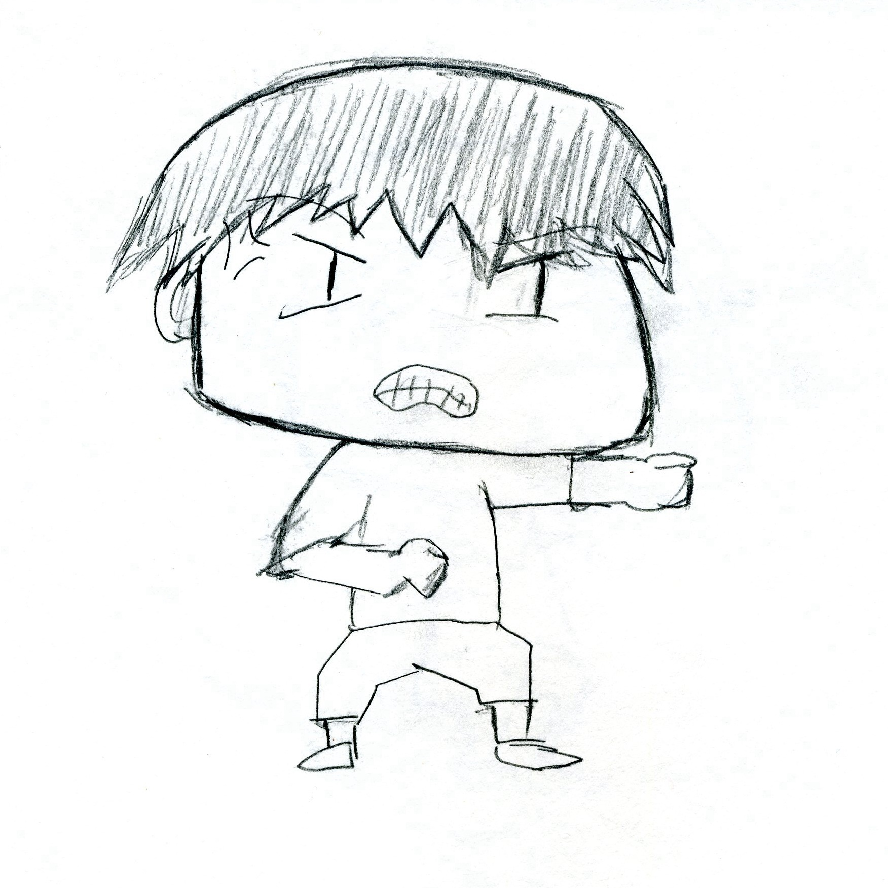
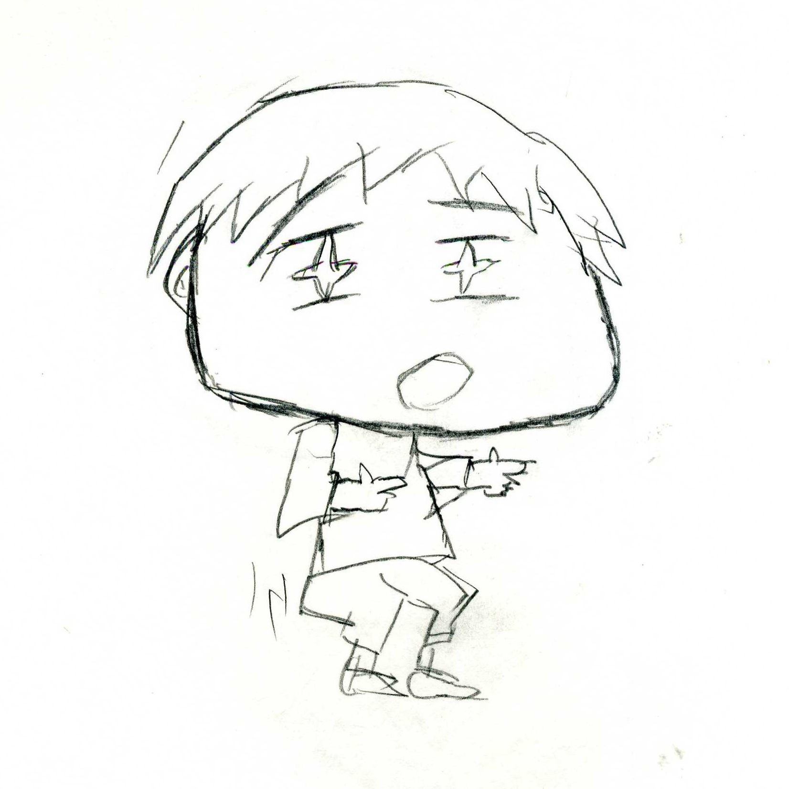
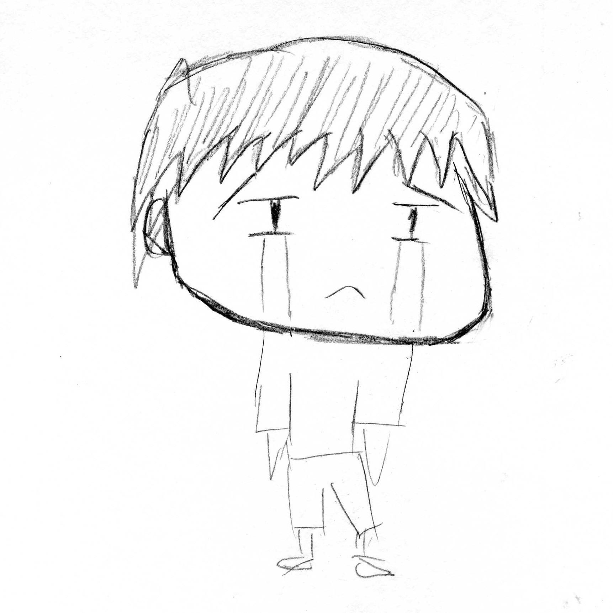

This is the four emotions of the original character, Kenley, a boy with good intuition. The character is design with rough hair, wide face and exaggerated body ratio. Only for the first time assignment, the work is done by pencil sketch.

Calm Face

Angry Face

"Hey Man!" Face

Sad Face
- Page Number: 4
- Page Size: 8.5×11
- Media use: Pencil Sketch
- Finished Date: Jan 29, 2015